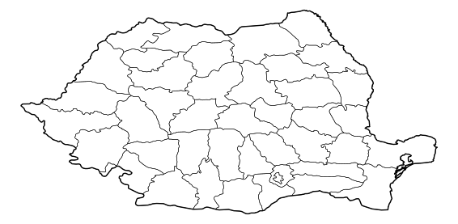

For this week I CNC engraved a map of Romania — country outline plus all 41 county boundaries — onto a 20 × 20 cm panel. Romania is home, so it felt like the right thing to make.
Rather than drawing the map by hand, I wrote a Python script that pulls the administrative boundaries directly from OpenStreetMap and Natural Earth data and renders them to SVG at the exact panel size. The county polygons come from Natural Earth's Admin-1 dataset — the generalization level is perfect for engraving (clean lines, no over-detail). The script dissolves all counties into one shape for the country outline, then plots the county boundaries on top at a thinner stroke weight.

"""
Fetch admin boundaries from OpenStreetMap / Natural Earth
and render to SVG for CNC engraving.
Output: white background, black lines — open directly in VCarve / Shaper app.
Panel size: 20 × 20 cm
"""
import geopandas as gpd
import matplotlib.pyplot as plt
PANEL_IN = 20.0 / 2.54 # 20 cm panel
def romania():
url = "https://naciscdn.org/naturalearth/10m/cultural/ne_10m_admin_1_states_provinces.zip"
admin1 = gpd.read_file(url)
counties = admin1[admin1["admin"] == "Romania"].copy()
# Dissolve all counties into one shape for the outer border
country = counties.dissolve()
fig, ax = plt.subplots(figsize=(PANEL_IN, PANEL_IN), dpi=300)
ax.set_facecolor("white")
counties.boundary.plot(ax=ax, color="black", linewidth=0.5) # county lines
country.boundary.plot(ax=ax, color="black", linewidth=1.4) # outer border
ax.set_aspect("equal")
ax.set_axis_off()
fig.savefig("romania.svg", format="svg", bbox_inches="tight", pad_inches=0)
romania()The SVG was opened directly in the Shaper app and used as the toolpath source. The outer border was cut at a deeper pass to make the country outline more prominent than the county boundaries, which were engraved at a shallower depth with a finer stroke.